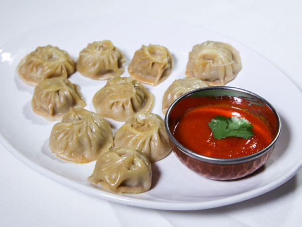
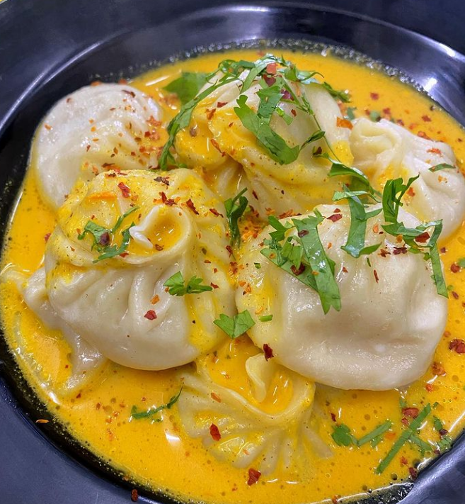

GO TO HOME
MOMO
Let's begin with the ingredients required.
- 500 gm of minced meat
- 1 grated onion
- Some finely chopped coriander
- 2 tablespoons of ginger and garlic paste each
- Half a tablespoon of coriander powder
- Half a tablespoon of turmeric
- Half a tablespoon of cumin powder
- 2 tablespoons of grated chilli
- 2 tablespoons of vegetable oil
- 2 tablespoons of salt
- 1 kg of flour

Preparing the fillings
- Add 1 grated onion to the minced meat.
- Add half a tablespoon of turmeric powder. This is to add a bit of color to the meat.
- To enhance the flavor of the filling add 2 tablespoon of salt.
- Add 2 tablespoons of grated chilli. You can add a bit more if you want the momos to be spicy.
- Add 2 tablespoons of ginger and garlic paste each.
- Add half a tablespoon of coriander powder to make the filling taste a bit sour.
- Mix the spices with the meat.
- Add 2 tablespoons of vegetable oil and mix it again. The oil prevents the filling from getting too dry
(Nepalese
love momo with juicy fillings).
- Add finely chopped coriander.
- Mix them well.
Making the momo wrappers
Making wrappers is easier than making the fillings or even the cooking part and it’s fun too!
- Put the flour into a bowl.
- Add water a little at a time to the flour to make dough.
- Knead the dough for a few more minutes. This makes the dough easier to use.
- Pinch off a bit of the dough (the amount depends on how big you want the wrapping to be).
- With a rolling pin roll the dough as thin as possible into circular shapes
(don’t make them too thin or too thick) the size of a glass.

Cooking the momos
Now comes the most difficult part: packing and cooking the momos!
- Put around one tablespoon of the filling into the centre of the wrapping.
- Pinch one edge of the wrapping to the other edge then twist it.
- Keep doing this until the filling is covered (make sure the wrapping fully covers the filling otherwise the
momos may break when steamed).
- Oil the bottom of the steamer. This prevents the momos from sticking.
- Put the momos in a systematic order so that they don’t touch each other.
- Steam for 20 – 30 mins.
Finally, your momos are now ready to be served! Fresh momos taste the best, so have a few while you’re still waiting for others.
GO TO HOME